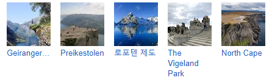

관광명소 :

언어: 노르웨이어
기후: 12월에는 오후 3시만 되어도 일몰하고 기온은 -15℃ 이하이다. 하지만 내륙으로 들어가면 겨울 기온이 떨어지고 강우량이 적다. 눈이 자주 오는 편이며, 북극처럼 백야 현상이 일어나기도 한다. 난류인 멕시코 만류(灣流)가 서해안을 따라 북쪽으로 흐르므로, 높은 위도에 비하면 온도가 낮지 않고 강우량이 많다. 예를 들면 남부 서해안의 베르겐은 겨울의 월평균 기온이 1.3∼1.5℃ 이며, 여름에는 약 15℃ , 위도에 비하여 비가 많이 오는 편이다.
국호: 노르웨이 왕국,Kongeriket Norge(보크몰)
면적: 385,203㎢(2018년)[1]
인구: 5,302,311명 (2018년)
수도: 오슬로(Oslo)
정치체제: 입헌군주제하의 의원 내각제
화폐단위: 노르웨이 크로네
환율: 1000KRW = 약 7.3NOK